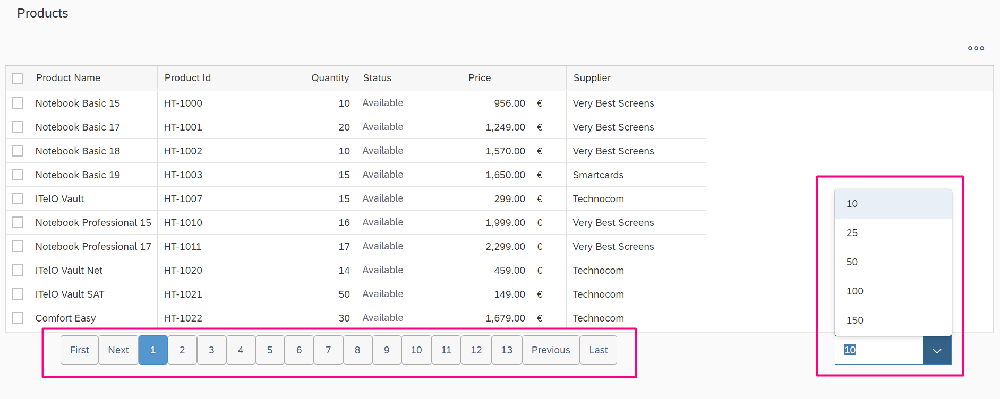
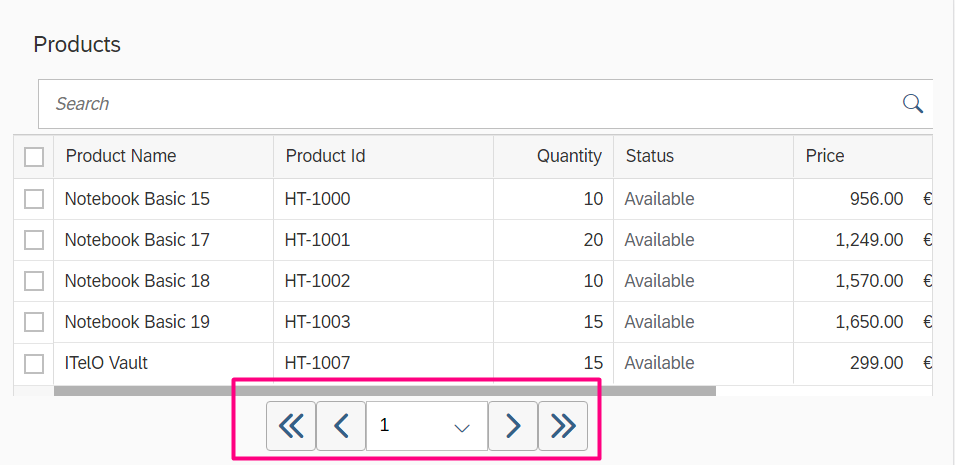

Custom paginator for Grid Table¶
Intro¶
In this blog post, I will mention how we add paginator to grid tables. The requirement was adding a paginator to the table using the 1.65 UI5 version. The paginator feature for the tables deprecated after the 1.38 version of UI5, so we couldn’t add paginator in grid tables. I decided to write my own paginator feature for the UI table.
When I started coding the paginator logic, It didn’t seem very complex. But after some parts of filtering, sorting, changing page count functionality, it became more and more complex. Filtering, sorting operations require changing your paginator dynamically and page count, per item per page attributes became dependent on this functionality.
|  |
|---|
| For desktop devices |
|  |
|---|
| For mobile devices |
Logic¶
I perform the rendering process of the paginator after the page rendering finished. The point to be careful here is that we need to do the render paginator again depend on all sorting and filtering operations.
_setTableSettings: function (params) {
.
.
this.addPaginator("productTable", aTableData);
.
.
oTable.attachSort(null, function (params) {
.
.
this.addPaginator("productTable", aTable);
.
.
oTable.attachFilter(null, function (params) {
.
this.addPaginator("productTable", aTable);
.
.
if (this._devicePhone) {
oHBoxPagination.setWidth("");
oHBox1.setJustifyContent("Center");
oHBox1.addItem(oHBoxPagination);
oHBox1.addItem(oLabel1);
oComboBoxCount.setSelectedKey("5");
oVBox1.addItem(oHBox1);
oContentHolder.addContent(oVBox1);
} else {
oHBox3.addItem(oLabel1);
oHBox4.addItem(oComboBoxCount);
oHBox2.addItem(oHBox3);
oHBox2.addItem(oHBox4);
oHBox1.addItem(oHBoxPagination);
oHBox1.addItem(oHBox2);
oVBox1.addItem(oHBox1);
oContentHolder.addContent(oVBox1);
}
this.oPagination.init({
size: size,
page: 1,
step: 5,
table: oTablex,
countTable: countTable,
countPerPage: countPerPage,
tableData: tableData,
devicePhone: this._devicePhone,
deviceTablet: this._deviceTablet
});
Next Step¶
There aren’t any codes in the view layer to create the paginator function. I aim to explain in the next blog post that how we can activate it with simple parameters in custom controls on the view layer instead of writing it in the controller. It will simplify and abstract all processes for reuse.
You can view the demo application and see all resources here.
Forks, pull-requests are welcome on Github.
Enjoy!